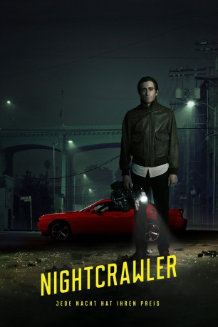

Alternativ: Nightcrawler
Auszeichnungen: für 1 Oscars nominiert
 
 IMDB-Wertung: 7.9 / 10
IMDB-Wertung: 7.9 / 10  Metascore:
Metascore: 
Lou Bloom hat seine ganz eigene Vorstellung vom American Dream – er ist überzeugt, dass die guten Dinge nur zu denen kommen, die sich ehrgeizig den Arsch abrackern. Seinem Motto nach kann man nur die Lotterie gewinnen, wenn man Geld für einen Lottoschein hat. Doch bei Lou will es mit dem Traumjob nicht so richtig klappen, weswegen er sich als Gauner mit kleinen Diebstählen über Wasser hält. Nach einer intensiven erfolglosen Jobsuche ist er so verzweifelt, dass er, bewaffnet mit einer Kamera, als freier Mitarbeiter Bilder von Unfällen, Verbrechen, Mord an einen lokalen TV-Sender verkauft. Nachdem seine Beiträge als Kameramann bei der Chefredakteurin Nina gut ankommen, stürzt er sich immer weiter in die Unterwelt von L.A. auf der Suche nach sensationellem und schonungslosem Bildmaterial, bei dem niemand wegsehen kann.
Jahr: 2014
Dauer: 117 Minuten
FSK: 16
Land: USA Studio: IITonspuren: DTS - ,
Untertitel: Deutsch,
Auflösung: 1080p (1920x800) Größe: 9400 MB
Regisseur: Dan Gilroy
Drehbuch: Dan Gilroy
Soundtrack: James Newton Howard
Darsteller:
 Jake Gyllenhaal als Louis Bloom
Jake Gyllenhaal als Louis Bloom Michael Papajohn als Security Guard
Michael Papajohn als Security Guard Marco Rodríguez als Scrapyard Owner
Marco Rodríguez als Scrapyard Owner Bill Paxton als Joe Loder
Bill Paxton als Joe Loder James Huang als Marcus Mayhem Video
James Huang als Marcus Mayhem Video Kent Shocknek als Kent Shocknek
Kent Shocknek als Kent Shocknek Jonny Coyne als Pawn Shop Owner
Jonny Coyne als Pawn Shop Owner Eric Lange als Ace Video Cameraman
Eric Lange als Ace Video Cameraman Ann Cusack als Linda
Ann Cusack als Linda Rene Russo als Nina Romina
Rene Russo als Nina Romina Kiff VandenHeuvel als Editor
Kiff VandenHeuvel als Editor Riz Ahmed als Rick
Riz Ahmed als Rick Myra Turley als Female Neighbor
Myra Turley als Female Neighbor Jamie McShane als Freaked Motorist
Jamie McShane als Freaked Motorist Michael Hyatt als Detective Fronteiri
Michael Hyatt als Detective Fronteiri Price Carson als Detective Lieberman
Price Carson als Detective Lieberman Bill Blair als Control Room Switcher , uncredited
Bill Blair als Control Room Switcher , uncredited Viviana Chavez als Desiree , uncredited
Viviana Chavez als Desiree , uncredited Jeffrey James Lippold als EMT-Paramedic(speaking , uncredited
Jeffrey James Lippold als EMT-Paramedic(speaking , uncredited Anne McDaniels als LA Weather Girl , uncredited
Anne McDaniels als LA Weather Girl , uncreditedDatei: X:\2014(N-Z)\Nightcrawler - Jede Nacht hat ihren Preis (2014, FSK16, 1920x800).mkv seit 13.03.2015
Festplatte: HD 2013(I-Z)-2014(A-Z)
 Es gibt insgesamt 163 Filme in der Gruppe '2014(N-Z)'
Es gibt insgesamt 163 Filme in der Gruppe '2014(N-Z)'